2007 Journal is a book, and it starts mid-conversation. The first page says only “Nu, am crescut în mijlocul orașului, în centru”: no, I grew up in the middle of the city, in the centre. The question is never printed. That is how the whole book speaks, apologising, correcting itself, arguing with a reader who isn't there: “Îmi cer iertare. Îmi pare rău.” The words and images do not explain each other. Beside a bed under a window of light: “Crearea unui spațiu”, the creation of a space. Above a house I drew as a child: “I have never seen what a rabbit's house looks like.” Among them are a column of my own code and a loading screen, “Windows is loading files...”, as if the diary were something a machine was slowly opening. Most of each spread is left white. I wrote at the time that the dialogue with the viewer would be “carried through movement and staring”, and the book waits for exactly that. It ends without resolving anything: “Nimic nu pare să mulțumească. Nu pare. Trebuie să lucrez.” Nothing seems to satisfy. It doesn't seem. I have to work.
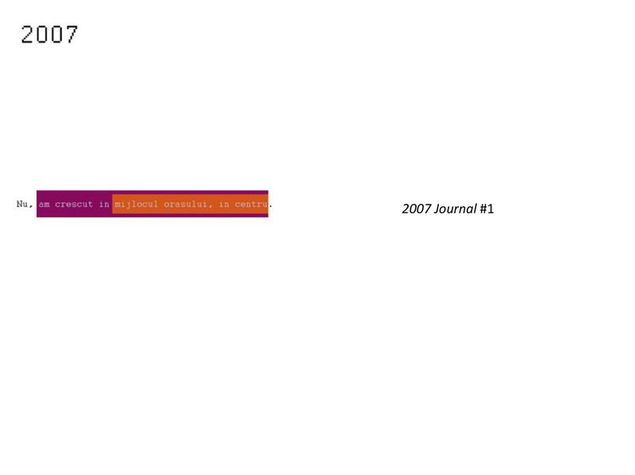
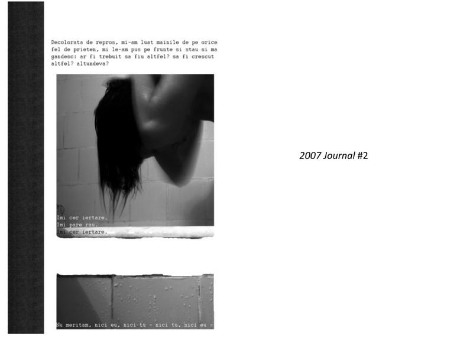
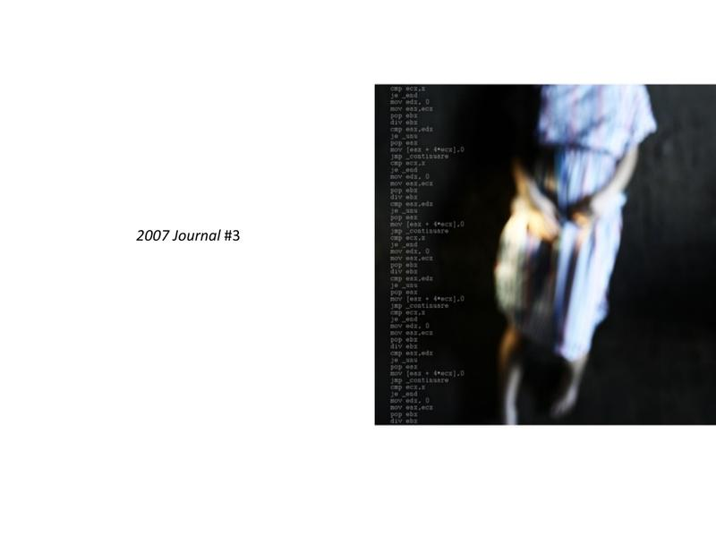
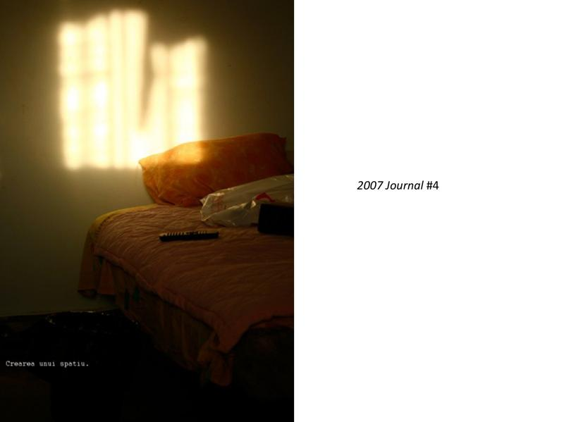
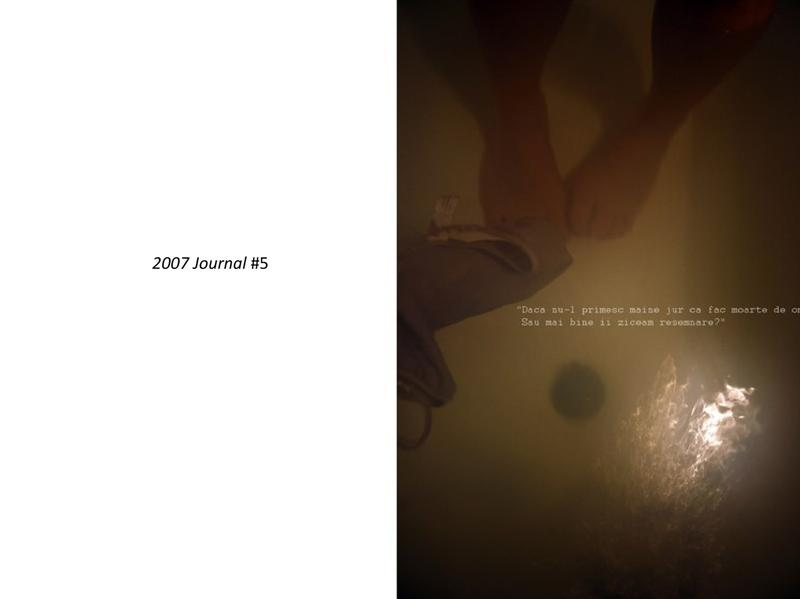
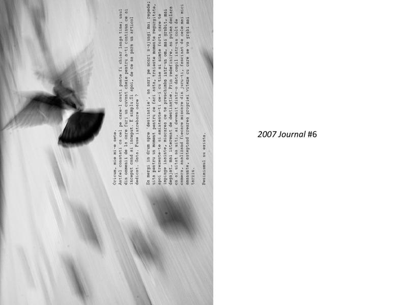
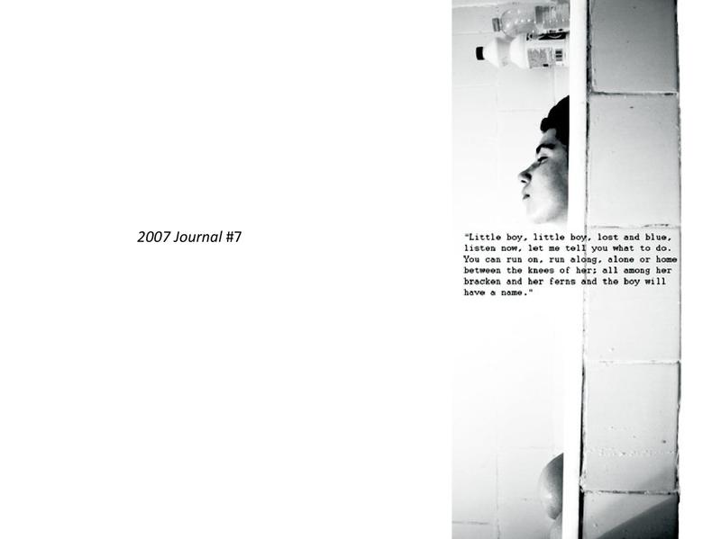
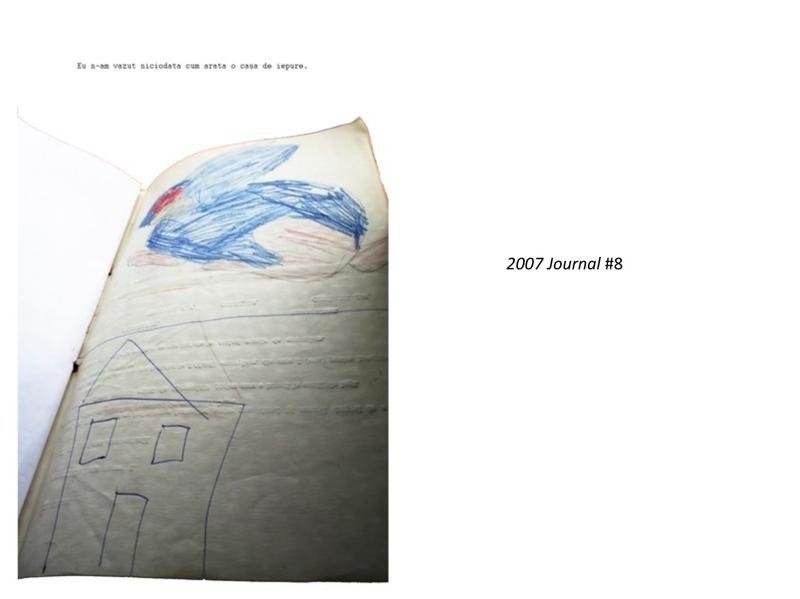
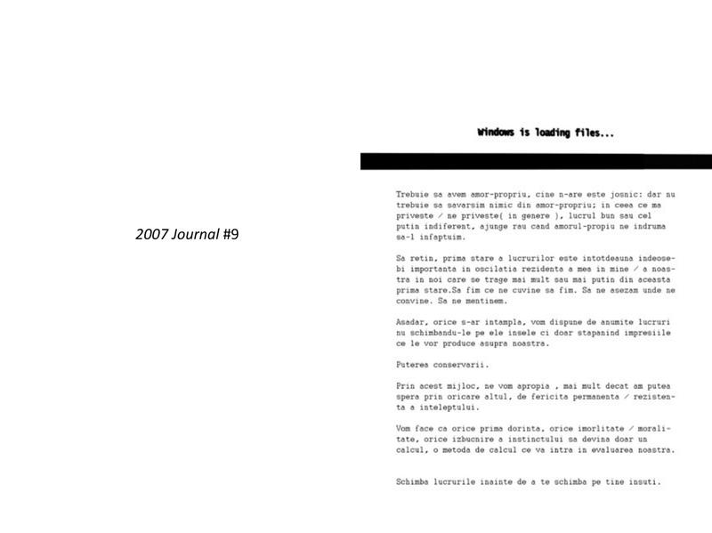
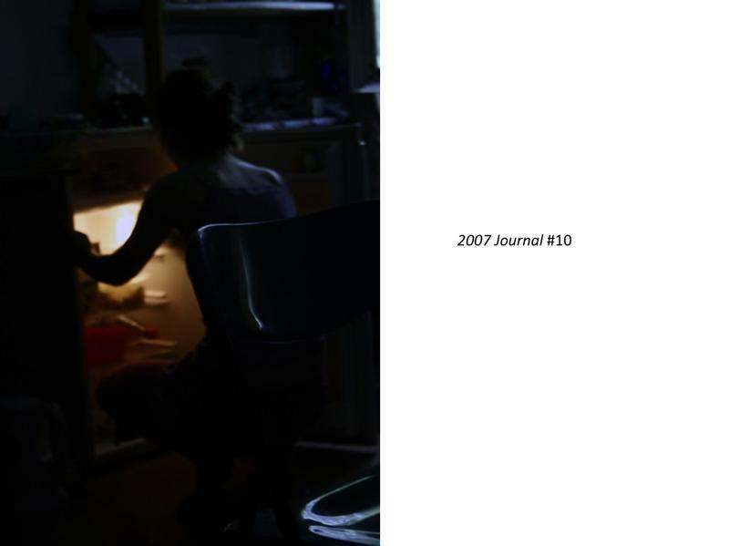
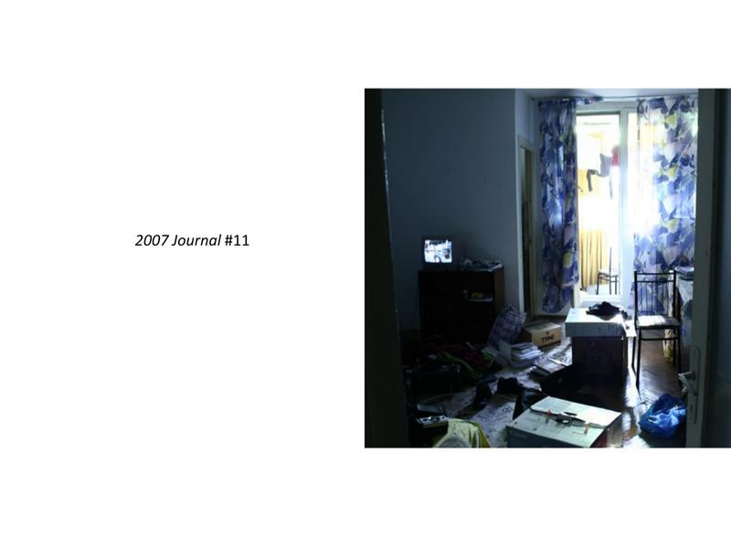
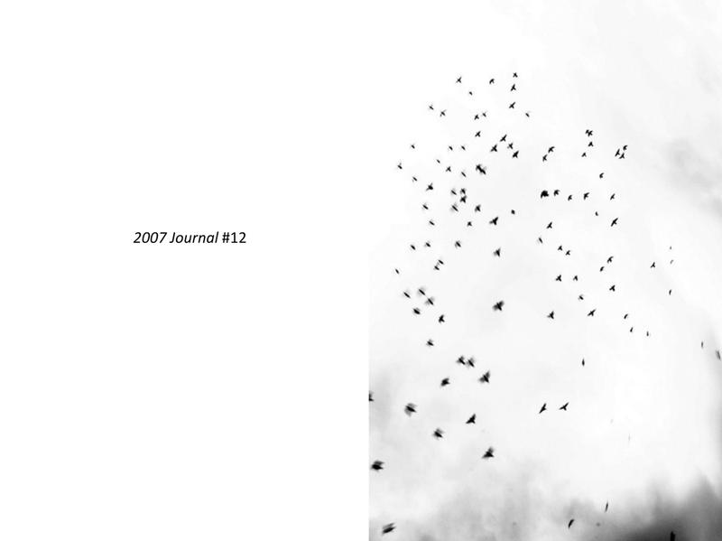
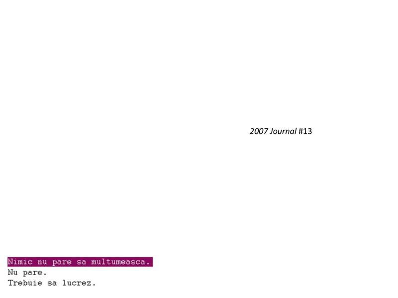